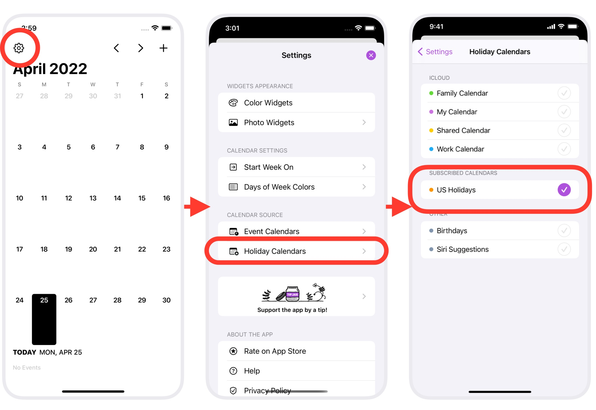

Ermine does not provide holiday information. It comes from the calendar source you selected in Ermine's settings.
If holidays are wrong, the holiday calendar source may be wrong, or the holiday calendar may not be updated properly.
Please use a holiday calendar that is updated with the latest information, such as Apple, Google, etc.
On iOS, Apple's holiday calendar is set according to your region's preferences. We recommend that you use it in Ermine as well.
In Ermine, select "US Holidays" in the "SUBSCRIBED CALENDARS" section. (The name of the holiday calendar will vary depending on your region setting.

Reference: About Holiday Calendars
If you are using Apple's holiday calendar in the above settings and you still see old holidays, the holiday calendar may not be updated properly. Open the Calendar app, tap "Inbox", and swipe down slowly to update.
Apple's holiday calendar appears automatically on the iPhone/iPad calendar based on the "Region" setting in the Settings app.
For more information, please visit:
About holiday calendars on iOS and macOS - Apple Support
If you can't see the holiday calendar by Apple, you may need to change some settings in the Settings app.
Also, if the iOS language is different from the region, the holiday calendar doesn't appear. In this case, try adding the region's language to the list of Preferred Language. Try the steps below: